Простые вещи. Из бумаги
Бума́га (предположительно от итал. bombagia, первоисточником же считается иранский) — волокнистый материал с минеральными добавками.

V.1
Результат вашего обучения

V.2
Результат вашего обучения

V.3
Результат вашего обучения

Максимальная белизна
Для повышения белизны, гладкости и мягкости в состав бумажной массы вводят белые минеральные вещества: мел, тальк, каолин и др. Эта операция называется наполнением.
Отлив бумажного листа осуществляют на бумагоделательной машине, важнейшей частью которой является непрерывно движущаяся (как транспортер) металлическая или капроновая сетка.